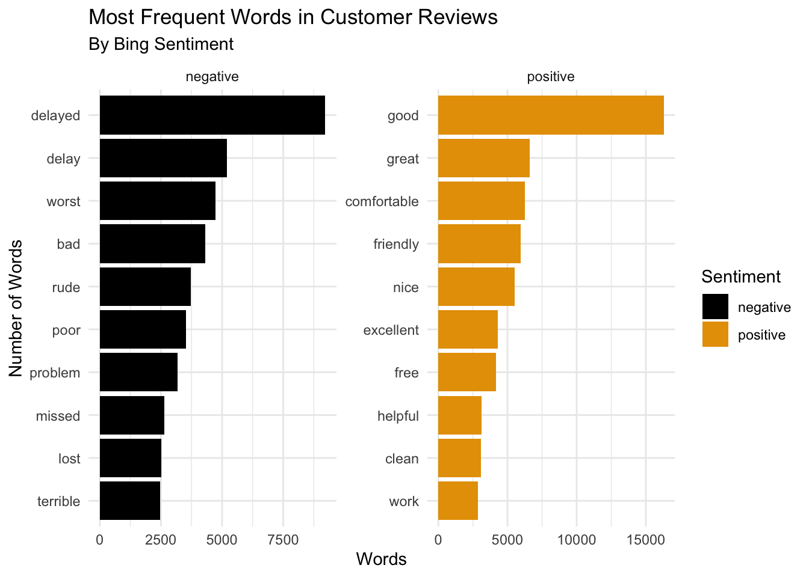
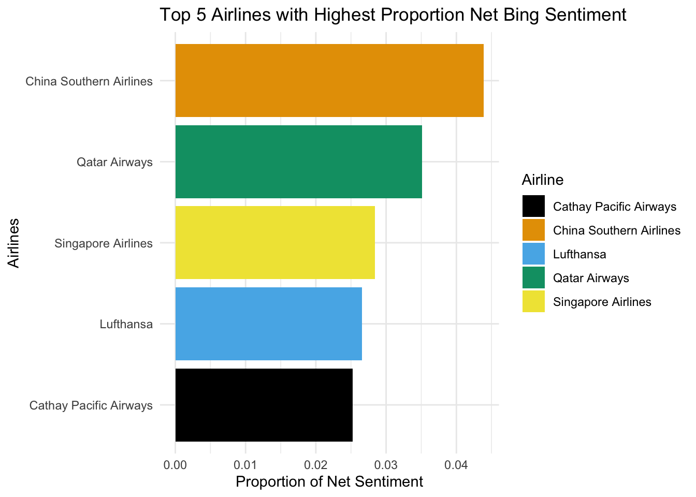
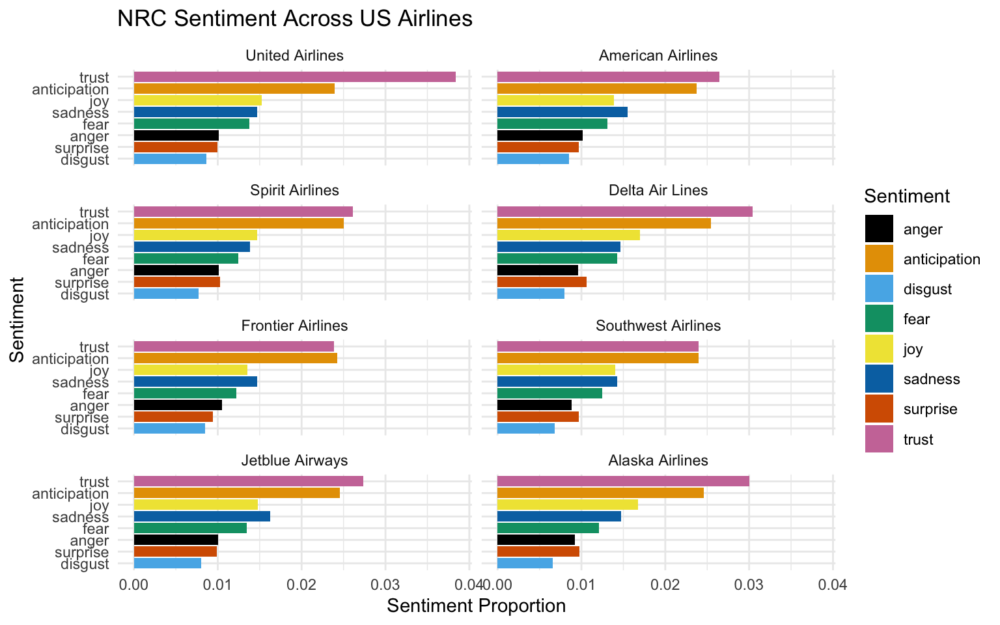
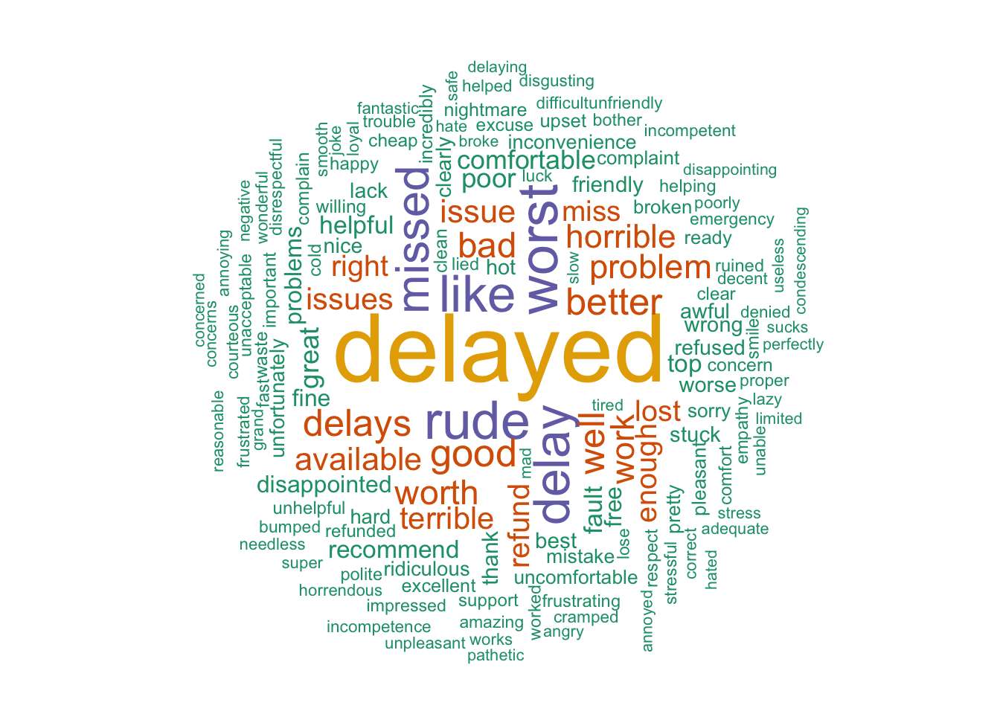
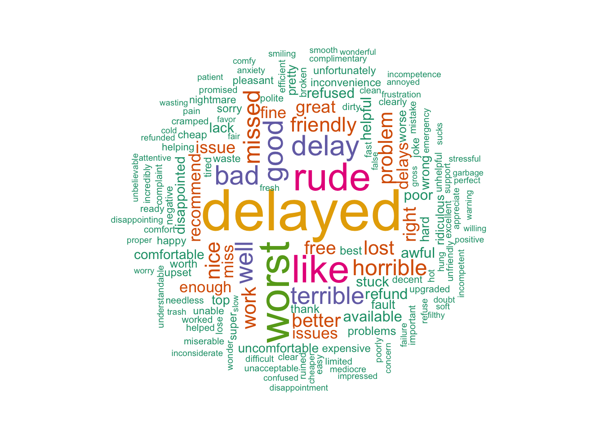
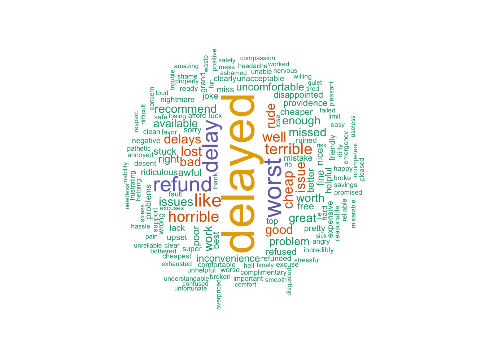

airline <- read_excel("~/Downloads/capstone_airline_reviews3.xlsx")
small_airline <- airline |>
select(!c(overall, author, aircraft, traveller_type,
seat_comfort:value_for_money), route, recommended) |>
drop_na() |>
mutate(review_date = str_replace(review_date, "[a-z]+\\b", ""),
customer_review = str_replace(customer_review, "^(.*?)\\| ", ""))SDS 264 Mini-project 1
Introduction
In this project, I will apply text and sentiment analysis to explore the frequency of words, trends, and create visualizations on a dataset of airline customer reviews. The dataset is found on Kaggle website that includes airline reviews from 2006 to 2019 for popular international and domestic airlines around the world. According to the author, the data is scraped in Spring 2019.
Data Wrangling
After loading the original dataset, I created a smaller dataset with fewer columns since other columns have a lot of missing data. Using str_replace() with two different regular expressions, I was able to make column ‘review_date’ and ‘customer_review’ cleaner. Then, using str_trim() and str_match() to first clean up column ‘route’ and then divide the column into three new columns called ‘origin’, ‘destination’, and ‘transit’. The resulting dataset has 39,604 observations and 10 variables. Each observation is a review of a customer.
# Divide the route into 3 new columns called origin, destination, transit
small_airline <- small_airline |>
mutate(route = str_trim(route),
route_match = str_match(
small_airline$route,
"(.+?)\\s+to\\s+(.+?)(?:\\s+via\\s+(.+))?\\s*$"),
origin = str_trim(route_match[,2]),
destination = str_trim(route_match[,3]),
transit = str_trim(route_match[,4])
) |>
select(!route_match)Explore Sentiment Analysis
In this section, we would like to explore the most frequent words occured in the customer reviews using Bing sentiment.
bing_sentiments <- get_sentiments(lexicon = "bing")
tidy_airline <- small_airline |>
unnest_tokens(word, customer_review, token = "words")
# get smart stop words
smart_stopwords <- get_stopwords(source = "smart")tidy_airline |>
anti_join(smart_stopwords) |>
inner_join(bing_sentiments) |>
count(sentiment, word, sort = TRUE) |>
group_by(sentiment) |>
slice_max(n, n = 10) |>
ungroup() |>
ggplot(aes(x = fct_reorder(word, n), y = n, fill = sentiment)) +
geom_col() +
coord_flip() +
facet_wrap(~ sentiment, scales = "free") +
labs(title = "Most Frequent Words in Customer Reviews",
subtitle = "By Bing Sentiment",
x = "Number of Words",
y = "Words",
fill = "Sentiment") +
theme_minimal() +
scale_fill_colorblind()
Using bing sentiment to analyze the words, we see that the word “delayed” associated with negative sentiment occurs more than 8,000 times followed by “delay”, “worst”, “bad”. On the other hand, the word “good” associated with positive sentiment occurs more than 15,000 times, triples the counts of other words.
Bing Net Sentiment
Besides exploring the negative and positive sentiments as two different groups, we can also add them together to get a net sentiment. Since the number of total words heavily depends on the number of total reviews for each airline, I first calculated the net bing sentiment for each airline, divided the net sentiment by the number of review words in each airline, and selected the top five airlines with the highest proportion.
airline_counts <- tidy_airline |>
group_by(airline) |>
summarise(n = n()) |>
rename(tot_word = n)# highest net sentiment
tidy_airline |>
inner_join(bing_sentiments) |>
count(airline, sentiment, sort = TRUE) |>
group_by(airline, sentiment) |>
slice_max(n, n = 1) |>
ungroup() |>
pivot_wider(names_from = sentiment, values_from = n) |>
inner_join(airline_counts) |>
mutate(sentiment = positive - negative,
prop_sentiment = sentiment/tot_word)|>
slice_max(sentiment, n = 5) |>
ggplot(aes(fct_reorder(airline, prop_sentiment),
prop_sentiment, fill = airline)) +
geom_col() +
coord_flip() +
labs(title = "Top 5 Airlines with Highest Proportion Net Bing Sentiment",
x = "Airlines",
y = "Proportion of Net Sentiment",
fill = "Airline") +
theme_minimal() +
scale_fill_colorblind()
Wee see that the top 5 airlines with the highest proportion are China Southern Airlines, Qatar Airways, Singapore, Lufthansa, and Cathay Pacific Airways. Take a closer look and we see that these airlines are known as some of the best airlines in the world (https://www.worldairlineawards.com/worlds-top-100-airlines-2025/). We can also see that none of the American airlines made it to top five even though they are in the top five of word counts. So let us take a deeper dive into the US airlines to see what the customers are saying!
Explore US Airlines
In this section, I used nrc sentiments to explore review sentiments since nrc sentiments give us more emotions that we can get more meanings from. I have removed “positive” and “negative” sentiments because I would like to really focus on the actual emotions.
us_airline <- small_airline |>
filter(airline %in% c("American Airlines", "Alaska Airlines",
"Jetblue Airways", "Southwest Airlines",
"Delta Air Lines", "United Airlines",
"Spirit Airlines", "Frontier Airlines")) |>
select(airline) |> distinct(airline)nrc_sentiments <- get_sentiments("nrc")
tidy_airline |>
inner_join(us_airline) |>
anti_join(smart_stopwords) |>
inner_join(nrc_sentiments) |>
filter(sentiment != "positive" & sentiment != "negative") |>
count(airline, sentiment) |>
left_join(airline_counts) |>
mutate(airline = fct_relevel(airline, "United Airlines",
"American Airlines", "Spirit Airlines",
"Delta Air Lines", "Frontier Airlines",
"Southwest Airlines", "Jetblue Airways",
"Alaska Airlines"
),
prop_sentiment = n/tot_word
) |>
ggplot(aes(fct_reorder(sentiment, prop_sentiment),
prop_sentiment, fill = sentiment) ) +
geom_col() +
facet_wrap(~airline, ncol = 2) +
labs(title = "NRC Sentiment Across US Airlines",
x = "Sentiment",
y = "Sentiment Proportion",
fill = "Sentiment") +
theme(axis.text.x = element_blank()) +
theme_minimal() +
scale_fill_colorblind() +
coord_flip()
Using the nrc sentiment, we see that “trust” sentiment has the highest proportion in all airlines except Frontier Airlines with “anticipation” having just a slightly higher proportion than “trust” has. In some airlines such as American Airlines, Frontier Airlines, and Jetblue Airways, “sadness” has a little bit more counts than “joy” has.
US Airlines Date Flown
Using str_extract() to only extract the year from variable ‘date_flown’, I made a line graph showing number of customer reviews over the years for each US airline.
small_airline |>
inner_join(us_airline) |>
filter(!str_detect(date_flown, "^\\d+$")) |>
mutate(year_flown = str_extract(date_flown, "[^a-zA-Z\\s]+")) |>
count(airline, year_flown, sort = T) |>
ggplot(aes(year_flown, n, group = airline)) +
geom_line(aes(color = fct_reorder2(airline, year_flown, n)),
linewidth = 0.7) +
labs(title = "Number of customer reviews from 2014 to 2019 by US airlines",
x = "Year of the Reviews",
y = "Number of Reviews",
color = "US Airlines") +
theme_minimal() +
scale_color_colorblind()![The visualization is a line plot showing the number of airline customer reviews over the years for eight US airlines recorded in the dataset. The x axis is the year of the reviews ranging from 2014 to 2019. The y axis is the number of customer reviews ranging from 0 to 700. There are eight lines representing eight US airlines American Airlines colored orange, Alaska Airlines colored dark blue, Jetblue Airways colored pink, Southwest Airlines colored dark orange, Delta Air Lines colored yellow, United Airlines colored light blue, Spirit Airlines colored black, and Frontier Airlines colored green. The plot shows the overall trend of number of reviews for eight airlines is increasing from 2014 to 2018. In 2018, all US airlines received the highest number of reviews with American Airlines received more than 600 reviews. However, between 2018 and 2019, the trend for all airlines decreased.](Airline-Customer-Reviews-Analysis_files/figure-html/unnamed-chunk-9-1.png)
We notice there was a peak in 2018 for all airlines, so let’s see what the customers are saying in their reviews using wordcloud. I chose American Airlines, United Airlines, and Frontier Airlines since they have a high number of reviews.
American Airlines
wordcloud(
words = aa_sentiment$word,
freq = aa_sentiment$n,
max.words = 150,
random.order = FALSE,
rot.per = 0.35,
scale = c(4, 0.6),
colors = brewer.pal(6, "Dark2")
)
United Airlines
wordcloud(
words = ua_sentiment$word,
freq = ua_sentiment$n,
max.words = 150,
random.order = FALSE,
rot.per = 0.35,
scale = c(4, 0.5),
colors = brewer.pal(6, "Dark2")
)
Frontier Airlines
wordcloud(
words = fa_sentiment$word,
freq = fa_sentiment$n,
max.words = 150,
random.order = FALSE,
rot.per = 0.35,
scale = c(4, 0.5),
colors = brewer.pal(6, "Dark2")
)
From these three wordclouds, we see that the word “delayed” appears the most. Other words that have a lesser count but still alot include “missed”, “rude”, “worst”, and “refund”. These words show that delayed flights could have happened quite frequently in these airlines. Many customers might have missed their flights and experienced not-so-great customer service.
Conclusion
In this project, we have applied text and sentiment analysis to explore the customer reviews for popular airlines. We were able to find the top five airlines with the highest proportion of net bing sentiment per number of words, showing that these airlines received a lot of positive reviews overall. We also specifically looked at US airlines recorded in the dataset to explore the reviews sentiment. The wordclouds indicated flight delay happened frequently because the word appeared the most. We have not had the chance to look at bigrams so we can do that in the future to see any changes in the number of counts or trends of nrc sentiments for each US airline.